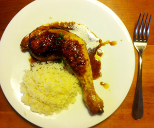

POULETSCHENKEL MIT HONIG UND ZITRONE
3,5 von 6Schneiden Sie die Zitrone in feine Scheiben. Würzen Sie die Pouletschenkeli mit Salz und Pfeffer und braten Sie sie in heissem Olivenöl rundum braun an. Geben Sie den halbierten Knoblauch und ein paar Thymianzweige dazu. Giessen Sie den Sherry-Essig darüber und lassen Sie ihn ein wenig einköcheln, danach geben Sie die Sojasauce und den Honig dazu. Lassen Sie alles sirupartig werden und giessen Sie dann ein wenig heisses Wasser dazu. Geben Sie die Zitronenscheiben bei und lassen Sie alles köcheln, bis die Pouletschenkel durchgekocht sind und die Flüssigkeit zum Sirup geworden ist. Geben Sie einige Thymianblättchen darüber und servieren Sie das Poulet mit Reis.
